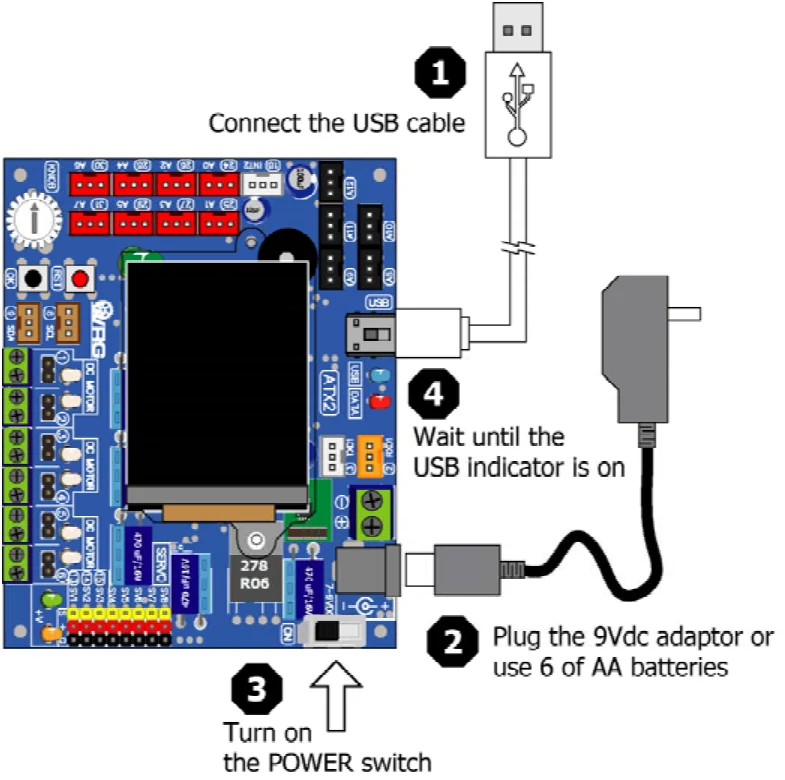
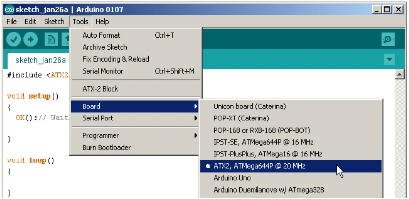
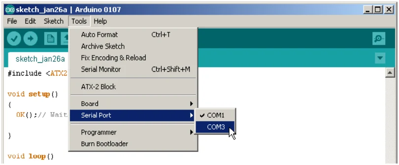
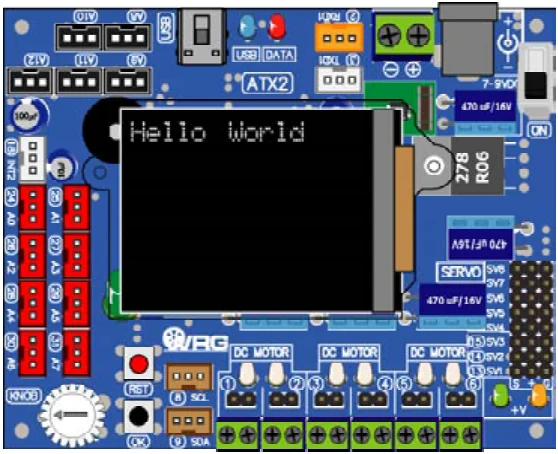

Activity 1-1 Hello World
(A1.1.1) Open the Arduino 1.0.7 software. Create the new sketch file. Type the code following the Listing A1-1. then save as the sketch.
(A1.1.2) Apply the supply voltage to the ATX2 board and turn on power. Connect the USB cable between ATX2 board and computer.

(A1.1.3) Choose the hardware at menu Tools > Board > ATX2; ATmega644P @20MHz

#include <ATX2.h> // Include main library
void setup()
{
glcdMode(1); // Set orientation mode 1 (90 deg)
setTextSize(2); // Set text size 2x
glcd(1,0,"Hello World"); // Send message to display
}
void loop()
{}Code description
This code will set the display orientation to 90 degree first (mode 1) because the ATX2 board orientation is wide. Next, set text size as 2x and send message "Hello World" to display at the line 1 column 0 of GLCD screen.
This sketch run at once. Because all code are contained in setup(); bracket
Listing A1-1 : ATX2_HelloGLCD.ino; the sketch file for sending message to display on the GLCD screen of the ATX2 board
(A1.1.4) Choose the interfaced port at menu Tools > Serial Port (Number of interfaced port may be different depend on each computer)

(A1.1.5) Compile and upload the sketch to ATX2 board by clicking on the button or choose at menu File > Upload
At the ATX2 screen, message Hello World will be displayed.

Original manual, pages 98–99